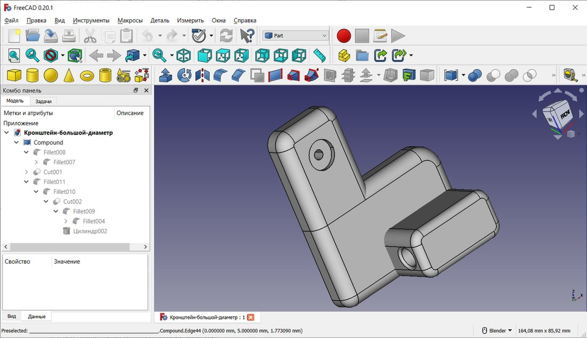
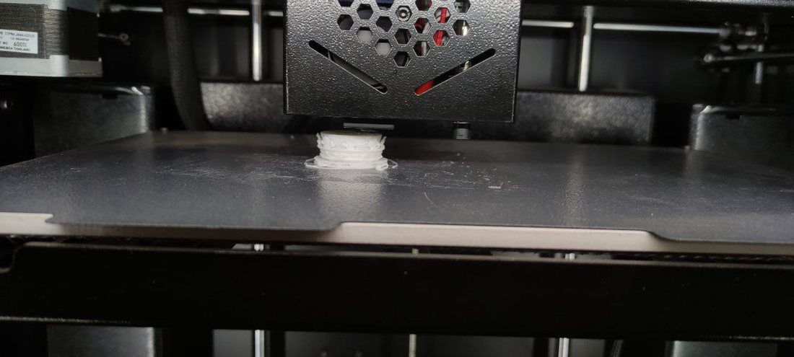
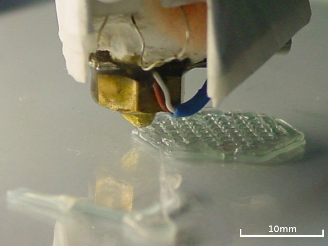
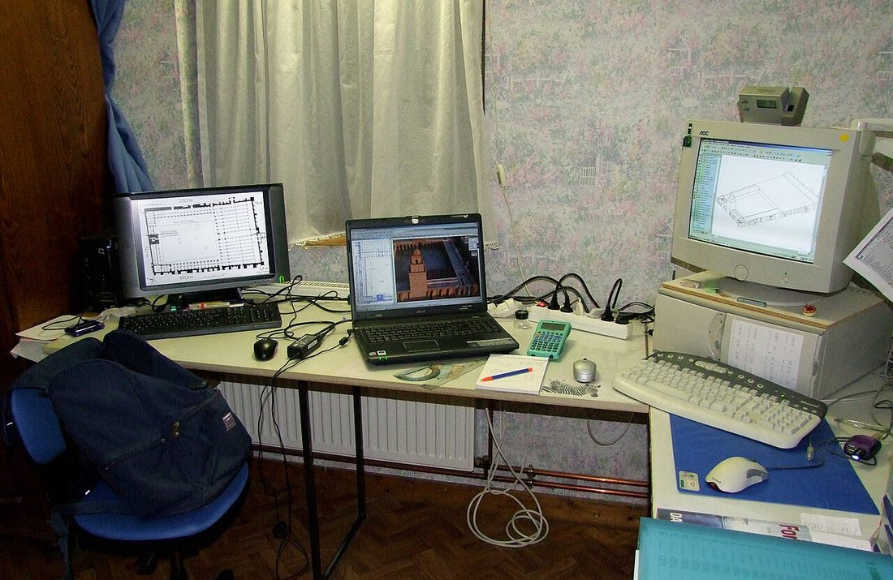

Көркем еңбек (ұлдар) · 5-бөлім · Дизайн және қолөнер Art & Craft (Boys) · Section 5 · Design & Crafts Художественный труд (мальчики) · Раздел 5 · Дизайн и ремёсла
Заманауи технологиялар мен мамандықтар (3D-басып шығару, CAD)
Modern Technologies and Professions (3D Printing, CAD)
Современные технологии и профессии (3D-печать, CAD)
Идеядан компьютерлік модельге, одан нақты бұйымға дейін: цифрлық дизайн қалай жұмыс істейді және ол қандай мамандықтар ашады. From an idea to a computer model, and from the model to a real part: how digital design works and the professions it opens. От идеи к компьютерной модели, а от модели — к реальной детали: как работает цифровой дизайн и какие профессии он открывает.
Цифрлық шеберхана дегеніміз не What a digital workshop is Что такое цифровая мастерская
Бұрын шебер бұйымды қолмен, ара мен кескішпен жасайтын. Бүгін көп нәрсе алдымен компьютерде туады. Шебер заттың 3D-моделін арнайы бағдарламада (CAD) сызады, содан кейін оны 3D-принтер қабат-қабат пластиктен «басып шығарады». Бұл — қолөнер мен инженерияны біріктіретін заманауи жол: дәл, қайталанатын және түзетуге оңай.
In the past a craftsman made a part by hand, with a saw and a chisel. Today much of it is born first on a computer. The maker draws a 3D model of the object in special software (CAD), and then a 3D printer builds it up out of plastic, layer by layer. This is the modern path that joins craft and engineering: precise, repeatable and easy to correct.
Раньше мастер делал изделие вручную — пилой и стамеской. Сегодня многое рождается сначала на компьютере. Мастер чертит 3D-модель предмета в специальной программе (CAD), а затем 3D-принтер «печатает» её из пластика слой за слоем. Это современный путь, соединяющий ремесло и инженерию: точно, повторяемо и легко исправляется.
CAD — сызуdrawingчерчение
CAD — Computer-Aided Design, «компьютерлік жобалау». Бұл — затты дәл өлшеммен үш өлшемде құратын бағдарлама (FreeCAD, Tinkercad, SolidWorks, Fusion 360, КОМПАС-3D). Модельді кез келген жағынан бұрауға, өлшемін өзгертуге және сынамас бұрын тексеруге болады. CAD means Computer-Aided Design. It is software that builds an object in three dimensions with exact measurements (FreeCAD, Tinkercad, SolidWorks, Fusion 360, KOMPAS-3D). You can rotate the model from any side, change its size and check it before anything is made. CAD — Computer-Aided Design, «автоматизированное проектирование». Это программа, которая строит предмет в трёх измерениях с точными размерами (FreeCAD, Tinkercad, SolidWorks, Fusion 360, КОМПАС-3D). Модель можно вращать с любой стороны, менять размер и проверять ещё до изготовления.
3D-басып шығару3D printing3D-печать
3D-принтер материалды қабаттап қосады — сондықтан оны аддитивті технология дейді (қосу). Ара мен фрезе артық бөлікті кесіп алады, ал принтер тек қажетті жерге материал қояды, демек қалдық аз. Ол ермексаздай емес — қатты пластиктен (PLA, PETG, ABS) берік бөлшек шығарады. A 3D printer adds material layer by layer — that is why it is called an additive technology (to add). A saw or a mill cuts away the extra part, while a printer only places material where it is needed, so there is little waste. It is not like clay: it makes a solid part from hard plastic (PLA, PETG, ABS). 3D-принтер добавляет материал слой за слоем — поэтому это аддитивная технология (добавлять). Пила или фреза срезают лишнее, а принтер только кладёт материал туда, где он нужен, поэтому отходов мало. Это не пластилин: получается прочная деталь из твёрдого пластика (PLA, PETG, ABS).
Идеядан бұйымға дейін: 5 қадам From idea to part: 5 steps От идеи к изделию: 5 шагов
Әрбір 3D-бұйым осы жолмен өтеді — мектептегі жоба да, зауыттағы деталь де. Every 3D part follows this path — a school project and a factory part alike. Каждое 3D-изделие проходит этот путь — и школьный проект, и заводская деталь.
Идея мен эскизIdea & sketchИдея и эскиз
Не керек екенін ойлап, қағазға қарапайым сурет саламыз, өлшемдерін белгілейміз.Decide what is needed, draw a simple sketch on paper and mark the dimensions.Решаем, что нужно, рисуем простой эскиз на бумаге и отмечаем размеры.
CAD-модельCAD modelCAD-модель
Бағдарламада дәл 3D-модель құрамыз. Файл әдетте STL форматында сақталады.Build an exact 3D model in the software. The file is usually saved as STL.Строим точную 3D-модель в программе. Файл обычно сохраняют в формате STL.
СлайсингSlicingСлайсинг
Слайсер модельді қабаттарға бөліп, принтер тіліне — G-code-қа аударады.A slicer cuts the model into layers and turns it into the printer's language — G-code.Слайсер режет модель на слои и переводит её в язык принтера — G-code.
Басып шығаруPrintingПечать
Принтер пластикті қыздырып, қабат-қабат қойып, бұйымды құрады. Бұл сағаттарға созылуы мүмкін.The printer melts the plastic and lays it down layer by layer to build the part. This can take hours.Принтер плавит пластик и кладёт его слой за слоем, формируя деталь. Это может занять часы.
ӨңдеуFinishingПостобработка
Тіреулерді алып, шеттерін тегістеп, керек болса бояймыз — бұйым дайын.Remove the supports, sand the edges and paint if needed — the part is ready.Снимаем поддержки, зачищаем края и при необходимости красим — изделие готово.
STL → G-code
Есте сақта: STL — модельдің пішіні, G-code — принтерге нақты нұсқау (қайда, қашан, қанша пластик). Remember: STL is the shape of the model, G-code is the exact instruction for the printer (where, when, how much plastic). Запомни: STL — это форма модели, а G-code — точная инструкция для принтера (куда, когда, сколько пластика).
Іс жүзінде: технологияны көрейік In practice: see the technology На практике: посмотрим технологию
Үлкейту үшін суретті басыңыз. Click a photo to enlarge. Нажмите на фото, чтобы увеличить.




3D-басып шығарудың үш әдісі Three methods of 3D printing Три метода 3D-печати
Әртүрлі есепке — әртүрлі технология. Мектепте көбіне FDM қолданылады. Different tasks need different technologies. At school FDM is used most often. Для разных задач — разные технологии. В школе чаще всего используют FDM.
| Метод | Как работает | Материал | Где применяют |
|---|---|---|---|
| FDM (послойная наплавка) | Сопло плавит пластиковую нить и кладёт её слой за слоем | PLA, PETG, ABS (нити) | Школа, дом, прототипы, корпуса, держатели |
| SLA (стереолитография) | Луч/экран засвечивает жидкую смолу, и она твердеет | Фотополимерная смола | Мелкие точные детали, фигурки, ювелирные модели |
| SLS (спекание порошка) | Лазер спекает порошок в местах будущей детали | Порошок нейлона, металла | Заводы, прочные функциональные детали |
| Әдіс | Қалай жұмыс істейді | Материал | Қайда қолданылады |
|---|---|---|---|
| FDM (қабаттап балқыту) | Сопло пластик жіпті балқытып, қабат-қабат қояды | PLA, PETG, ABS (жіптер) | Мектеп, үй, прототиптер, корпустар, ұстағыштар |
| SLA (стереолитография) | Сәуле/экран сұйық шайырды қатайтады | Фотополимер шайыры | Ұсақ дәл бөлшектер, мүсіндер, зергерлік модельдер |
| SLS (ұнтақты қыздыру) | Лазер ұнтақты болашақ деталь орнында бекітеді | Нейлон, металл ұнтағы | Зауыттар, берік қызметтік бөлшектер |
| Method | How it works | Material | Where it is used |
|---|---|---|---|
| FDM (fused deposition) | A nozzle melts a plastic filament and lays it down layer by layer | PLA, PETG, ABS (filaments) | School, home, prototypes, cases, holders |
| SLA (stereolithography) | A beam/screen cures a liquid resin and it hardens | Photopolymer resin | Small precise parts, figurines, jewellery models |
| SLS (powder sintering) | A laser fuses powder where the part will be | Nylon or metal powder | Factories, strong functional parts |
Бұл технологиялар ашатын мамандықтар Professions these technologies open Профессии, которые открывают эти технологии
Цифрлық дизайнды білу көптеген заманауи кәсіптерге жол ашады. Knowing digital design opens the door to many modern jobs. Знание цифрового дизайна открывает путь во многие современные профессии.
CAD-инженерCAD engineerИнженер-конструктор (CAD)
Машина мен бұйымдардың дәл 3D-модельдері мен сызбаларын жасайды.Creates precise 3D models and drawings of machines and products.Создаёт точные 3D-модели и чертежи машин и изделий.
Өнеркәсіптік дизайнерProduct designerПромышленный дизайнер
Заттың сыртқы түрін, ыңғайлылығын және әсемдігін ойлап табады.Invents how an object looks, feels and works for the user.Придумывает внешний вид, удобство и красоту предмета.
3D-оператор3D print operatorОператор 3D-печати
Принтерлерді баптайды, материал таңдайды, басып шығаруды бақылайды.Sets up the printers, chooses materials and watches the print run.Настраивает принтеры, выбирает материал и следит за печатью.
ПрототиптеушіPrototyping specialistСпециалист по прототипам
Жаңа өнімнің алғашқы үлгісін жасап, оны сынайды.Makes the first sample of a new product and tests it.Делает первый образец нового продукта и испытывает его.
Архитектор-моделистArchitectural modellerАрхитектор-макетчик
Ғимараттардың 3D-модельдері мен макеттерін дайындайды.Builds 3D models and scale mock-ups of buildings.Готовит 3D-модели и макеты зданий.
Медициналық инженерMedical engineerМедицинский инженер
Протездер мен имплантаттарды нақты адамға қарай басып шығарады.Prints prosthetics and implants tailored to a real patient.Печатает протезы и импланты под конкретного человека.
Қауіпсіздік және кеңестер Safety & tips Безопасность и советы
- 1Сопло мен үстел ыстық (200 °C-қа дейін) — қолмен ұстама, күюден сақтан.The nozzle and bed are hot (up to 200 °C) — do not touch, beware of burns.Сопло и стол горячие (до 200 °C) — не трогай руками, берегись ожогов.
- 2Бөлмені желдет: кейбір пластик басып шығарғанда иіс шығарады.Ventilate the room: some plastics give off fumes while printing.Проветривай помещение: некоторые пластики выделяют запах при печати.
- 3Қозғалатын бөліктерге саусақ пен шашты жақындатпа.Keep your fingers and hair away from moving parts.Держи пальцы и волосы подальше от движущихся частей.
- 4Алдымен кішкене сынақ модель басып шығар — қателерді ерте көресің.Print a small test model first — you will catch mistakes early.Сначала печатай маленькую пробную модель — ошибки заметишь раньше.
Өзіңді тексер Test yourself Проверь себя
Ұпай:Score:Счёт: 0 / 3